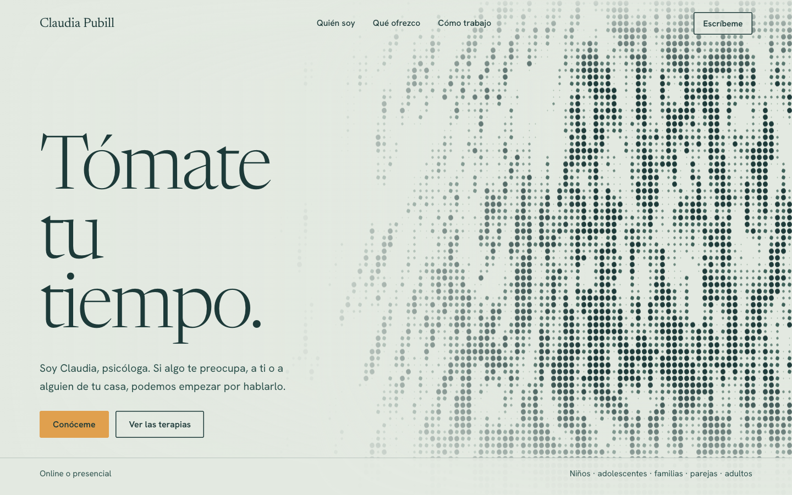

A · Respira
Un campo de puntos vivo que se mece como la hierba y se inclina al pasar el cursor. Sereno, artesanal y distinto a lo que se ve en psicología.
- Lo mejor
- Se recuerda, transmite calma y no necesita fotos para lucir.
- Ten en cuenta
- Es la más “de autor”. Más adelante el campo se puede sustituir por un vídeo propio con esta misma técnica.